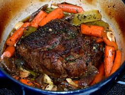

Home
Dylan's Pot Roast

Welcome to a very basic Pot Roast recipe!
Ingredients you will need:
- 2 lbs. Chuck Roast
- Handful of Baby Carrots
- 1 Yellow Onion Large Chopped
- 1 Jar Pepperoncini with liquid
- 4 Red Potatoes Quartered
- Salt and Pepper to taste
- 1 T Italian Seasoning
- Garlic Powder to taste
Instructions:
- Place Red Potatoes, Carrots, and Onion in bottom of Crock Pot.
- Season Chuck Roast thoroughly on all sides.
- Place Chuck Roast on top of vegetables.
- Pour Pepperoncini and juice on top of roast.
- Cook on Low for 6-8 hours or High for 3-5 hours.
- Slice or Shred Pot Roast and serve with vegetables.